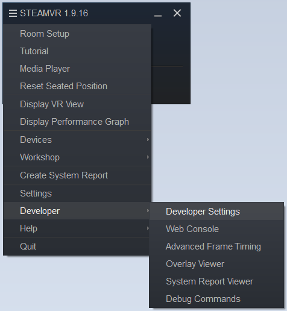
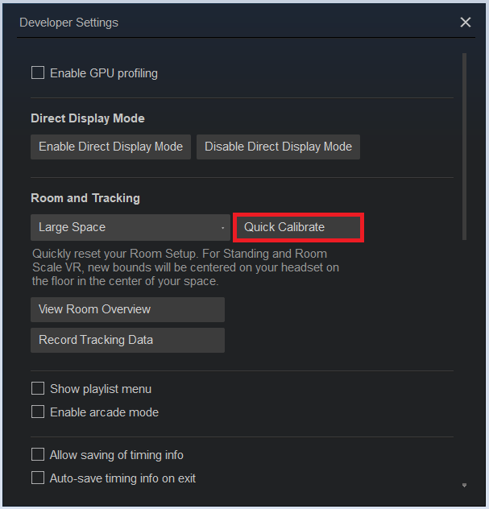
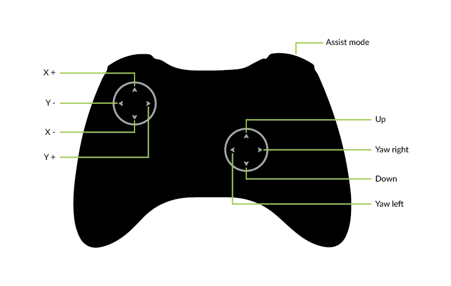

This documentation is meant to get you up and running with the lighthouse positioning system with the crazyflie.
Requirements:
Setup:
Flying:
This sets up a crazyflie to a paricular pair of lighthouses. If you want to pair the crazyflie to another pair of lighthouses or crazyflie, this phase must be repeated.
The blank scene provided by SteamVR shows the position of the origin using a series of lines and circles through the headset
The step of setting the origin is not neccesary, but it may be worth moving it to the centre of the play area as the drone will take off from this point. We mark the origin and axes with tape.
To set the origin of a lighthouse system. Get a computer and connect the headset to it. Open Steam VR on the computer (Steam VR is a tool that can be downloaded from steam).
Navigate to STEAMVR -> Developer -> Developer Settings 
Place the headset on the ground in the position you want your origin, and the direction that you want your positive X to be. The positive Y will go to the right of the headset and positive Z will go up.
Once the headset is placed press ‘Quick Calibrate’ to set the origin to the new position. 
Keep Steam VR running, and do the following on the computer with Steam VR
To find the position of the lighthouse, check out a copy of the crazyflie firmware
https://github.com/bitcraze/crazyflie-firmware
Then with python 3. Install openvr and numpy. Then run the script found in
crazyflie-firmware/tools/lighthouse/get_bs_position.pyThis will give an output that look like this:
Openning OpenVR
OpenVR Oppened
Origin: {} [0, 0, 0]
-------------------------------
{.origin = {-1.421995, 2.188835, -1.382714, }, .mat = {{-0.773449, 0.339506, -0.535269, }, {0.027097, 0.861399, 0.507206, }, {0.633280, 0.377794, -0.675447, }, }},
{.origin = {1.311097, 2.224771, 1.318952, }, .mat = {{0.641178, -0.457615, 0.616019, }, {0.029892, 0.817028, 0.575823, }, {-0.766810, -0.350791, 0.537539, }, }},The last 2 lines here are positions and rotations that can be copied into the firmware for the lighthouse deck.
Copy the results there, and paste them into
crazyflie-firmare/src/deck/drivers/src/lighthouse.cinside the lighthouseBaseStationsGeometry variable.
Also, make sure you comment out the DISABLE_LIGHTHOUSE_DRIVER lines before it
//#ifndef DISABLE_LIGHTHOUSE_DRIVER
// #define DISABLE_LIGHTHOUSE_DRIVER 1
//#endifTo enable the driver.
Additional details can be found here.
The simplest way to build and flash the updated firmware is to use the CrazyFlie Development VM
https://www.bitcraze.io/getting-started-with-the-crazyflie-2-0/#inst-virtualmachine
Transfer the firmware to the VM and compile the driver with make. Then, with the crazyflie radio connected and the crazyflie booted into firmware mode, run make cload to flash the firmware onto the drone.
There are several ways to test the setup. As the crazyflie can fly in unexpected ways if it is not set up correctly, we recommend being fairly certain that the system works before flying.
Flying the drones using the VM client has been known to have issues during flight. If the VM isn’t reliably controling the Crazyflies, try running the client natively.
https://www.bitcraze.io/getting-started-with-the-crazyflie-2-0/#installation-flavour
The first thing to do is to start the crazyflie, with the lighthouse module installed on top of it, within the play space. Make sure that nobody or nothing is obstructing the crazyflie’s view of the two lighthouses.
Then connect to the crazyflie with the crazyflie client. Make sure that you have the Look at the logs of the crazyflie. If you are getting errors such as “State out of bounds, resetting” continously or it does not say that it is ready to fly, then it has not been set up correctly, and we recommend that you check through the above steps (particularly commenting out DISABLE_LIGHTHOUSE_DRIVER). If the drone says it is ready to fly, then continue onto the next test.
The position calculated by the Crazyflie can be plotted by creating a log block within the client.
To create a log block, connect to the Crazyflie, then open the logging configuration window.
Fill out the window as shown, then save the new log block.
The new log block should now be visible in the plotter tab of the client. (Go to View -> Tabs if the plotter tab isn’t available)
The position of the drone should now be plotted to the screen, try moving it around to check that the readings make sense.
Place the crazyflie back inside of the play space. On the crazyflie client, set the assist mode to position hold. You need a gamepad (x-box controller) to fly the drone using the pc client.
The client supports multiple types of controllers, to select the correct mapping select the Input device -> Device menu, or Configure device mapping to create your own.
Here are the controls to fly a drone in position hold mode. Note 2 important things. 
Start flight by holding down the assist button, the drone, without any other inputs should try to hover itself very slightly above the ground. If it does, move it up off the ground using the right stick. The drone should hover in the same position as long as you hold down the assist button.
The drone may drift slightly. This issue is generally fixed by restarting the drone and ensuring that it is on a truly flat surface when it is trying to stabalise itself.
The position hold is not likely going to be perfect.
If this works, it’s worth trying out (almost) autonomous flight
You will have to run this on a computer with Steam VR installed and running.
Clone the repo for cflib, which allows autonomous flying
https://github.com/bitcraze/crazyflie-lib-pythonIf you are on Linux, take note of the information in the README about how to run these scripts without root, and install the package as per the README.
Open up SteamVR, and make sure that all items except one controller are visible within SteamVR (visible of the lighthouse deck) Place that one controller on the floor next to the crazyflie drone, about 20cm away.
Before doing this, be ready to press Ctrl+C on the python script to ensure that you can stop the drone if it behaves strangely.
Turn the crazyflie on inside the space, and run the following:
python examples/lighthouse/lighthouse_openvr_grab.pyThe drone should hover itself about 30cm above the controller. Take the controller and use the trigger on the back to drag the drone around. To stop it from flying, bring it close to the ground and exit the script with Ctrl+C or similar.
Finally, this uses the code that we developed based off the grab system that controls the drone to create a path.
First, open up a 3D modelling program such as Blender, and create a path (a line of vertices, or a closed shape but curves also work). Keep in mind that 1 unit in your software is equal to one meter of space, so ensure that you are not flying too far in any particular direction, or underneath the earth (below z=0).
Export your file as a .obj file. Then put it in the same directory as this project
with the crazyflie radio attached, and cflib installed, run
python pathfind.py <exported_obj_file>Wait, and it should follow the path slowly. If the LED deck is installed it will light up when it is following your path and turn off when it is not. It should safely fly itself up and down.